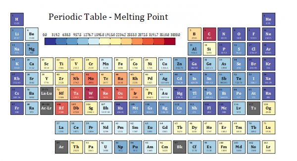
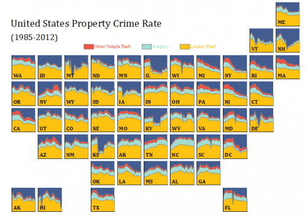
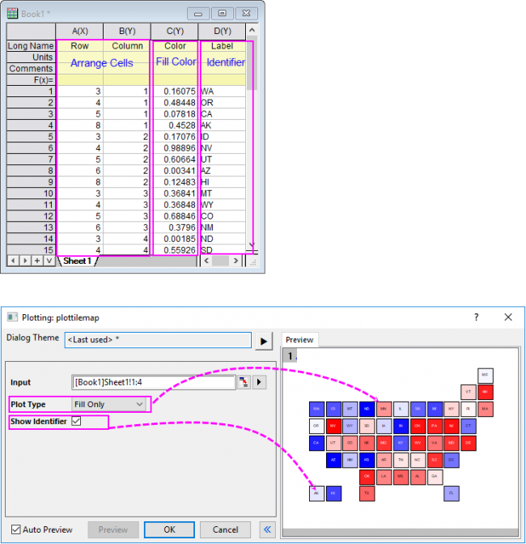
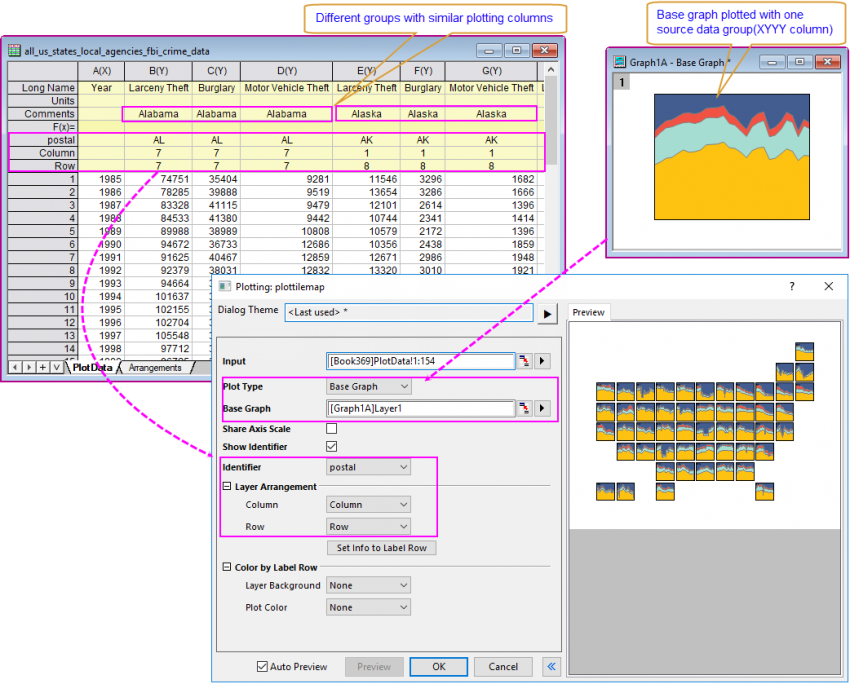
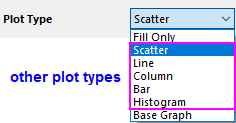
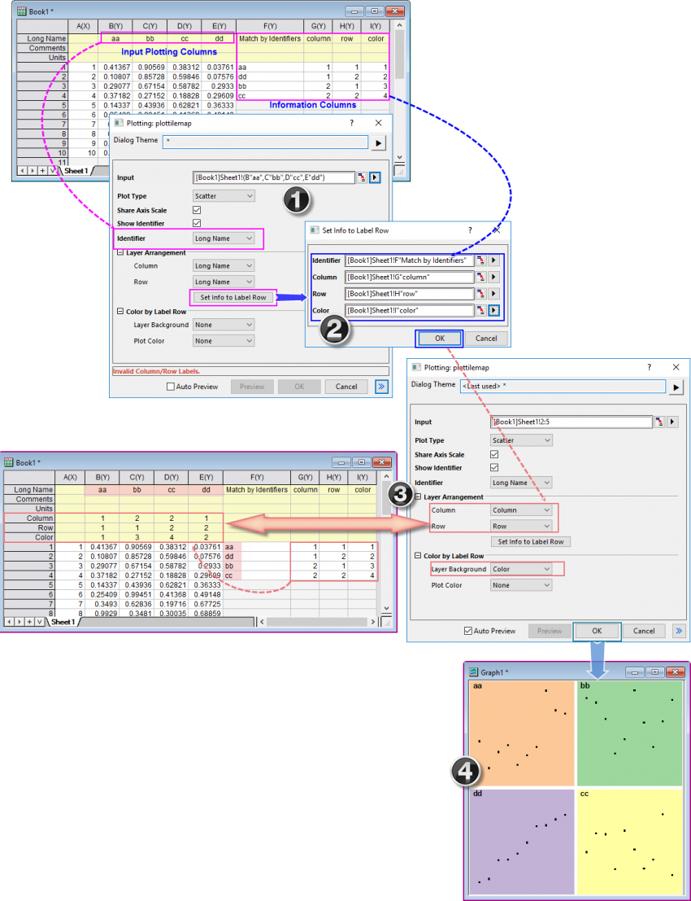

Karte mit Kachelraster
Tile-Grid-Map
- 
- Mehrere Layer mit Basisdiagramm:
- 
Datenanforderungen
Nur Füllung: XYY- oder XYYY-Spalten.
X- und Y-Spalten werden verwendet, um die Zellen zu lokalisieren. Die zweite Y-Spalte wird verwendet, um die Zellen farblich abzubilden. Die dritte Y-Spalte ist optional und wird dazu verwendet, die Zellen zu beschriften.
Basisdiagramm: Ein allgemeines 2D-Diagramm als Basisdiagramm, ein Arbeitsblatt mit mehreren Spaltengruppen zum Zeichnen und Informationsbeschriftungszeilen (oder Spalten).
Andere Diagrammtypen: Ein Arbeitsblatt mit mehreren Spaltengruppen zum Zeichnen und Informationsbeschriftungszeilen (oder Spalten).
Diagramm erstellen
Wählen Sie die gewünschten Daten aus.
Wählen Sie im Menü .
Der Dialog X-Funktion plottilemap wird geöffnet, damit Sie eine Karte mit Kachelraster, entweder mit Nur Füllung oder Mehreren Layern, zeichnen können.
Zellen nur füllen (ein Layer)

Wenn Sie den Diagrammtyp Nur Füllung wählen, werden die ersten beiden Spalten als Punktdiagramm mit schwarzem Rand und farbkodierter Füllung gezeichnet. Die Füllfarbe entscheidet sich entsprechend der dritten Spalte. Wenn die vierte Spalte ausgewählt wird, werden deren Werte als Zellenbeschriftungen/Identifizierer betrachtet.
Zellen mit Zeichnung (mehrere Layer)

Wenn Sie eine andere Option (außer Nur Füllung) unter Diagrammtyp auswählen, zeichnen Sie eine Karte mit Kachelraster mit mehreren Layern, die sich von der Karte mit Kachelraster mit Nur Füllung unterscheidet:
- Wenn Sie den Diagrammtyp Basisdiagramm auswählen, müssen Sie einen existierenden Diagrammlayer als Vorlage auswählen, um andere gruppierte Daten als ähnliche Diagrammlayer zu zeichnen, und diese Layer nach Zeilen- und Spaltenwerten anordnen.
- Wenn Sie andere Diagrammtypen wie das Punktdiagramm auswählen, müssen Sie einen Diagrammlayer im Voraus auswählen. Alle gruppierten Daten werden dann entsprechend als Punktdiagramme gezeichnet und nach Zeilen- und Spaltenwerten angeordnet.
- 
Sie können auch die Bedienelemente in der Gruppe Farbe nach Beschriftungszeile verwenden, um die Hintergrundfarbe des Layers und die Diagrammfarbe mit den Werten der Spaltenbeschriftungszeile festzulegen.
Informationsspalten auf Beschriftungszeile setzen
Abgesehen von der Auswahl existierender Spaltenbeschriftungszeilen für die Optionen Spalte, Zeile und Farbe können Sie auch das Hilfsmittel Infos auf Beschriftungszeile setzen verwenden, um Arbeitsblattspalten auszuwählen, sie auf Spaltenbeschriftungszeilen zu setzen und diese neu erstellten Spaltenbeschriftungszeilen zu verwenden, um die Diagrammlayer anzuordnen und mit Farbe zu versehen:

- Als Erstes bereiten Sie, neben den zu zeichnenden Spalten für die Eingabe, diese Infospalten vor: Geordnete Identifizierer, Spaltenordnung, Zeilenordnung und Hintergrundfarbe (optional). Wählen Sie im Dialog plottilemap die Beschriftungszeile des Identifizierers (in diesem Fall "Langname") für die Option Identifizierer. Klicken Sie auf die Schaltfläche Info aus Beschriftungszeile setzen, um den Dialog Info aus Beschriftungszeile setzen zu öffnen.
- Im Dialog Info aus Beschriftungszeile setzen wählen Sie die Spalte Geordnete Identifizierer für Identifizierer. Diese Spalte wird verwendet, um die Zeilen der Informationsspalten zu ordnen, wenn sie als Beschriftungszeilen festgelegt werden. Wählen Sie die Spalte "Spalte","Zeile" und "Farbe" für die Optionen Spalte, Zeile und Farben. Klicken Sie auf OK.
- Im Quellarbeitsblatt wurden die Werte in den Informationsspalten transponiert und als Spaltenbeschriftungszeilen Spalte,Zeile und Farbe eingefügt. Ihre Werte wurden mit den Identifizierern in Spalte Col(F) und dem "Langname" der Spalten Col(B) ~ Col(E) abgestimmt und neu geordnet. Im Dialog plottilemap werden die neu erstellten Beschriftungszeilen automatisch ausgewählt. Wenn das Quellarbeitsblatt bereits Spaltenbeschriftungszeilen mit den Namen "Spalte","Zeile" und "Farbe" hat, könnten die neu erstellten Beschriftungszeilen "Spalte1","Zeile1" und "Farbe1" usw. heißen.
- Klicken Sie auf OK, um die Karte mit Kachelraster zu zeichnen. Sie können sehen, dass die vier zu zeichnenden Eingabespalten als vier Layer gezeichnet wurden und diese Layer entsprechend der Infospalten angeordnet und gefärbt wurden.
Vorlage
Nur Füllung: TileGridFillOnly.OTPU (installiert im Origin-Programmordner).
Basisdiagramme: Der Layer des Basisdiagramms wird als Vorlage verwendet.
Andere Diagrammtypen: Die Standardvorlagen (wie Scatter.otpu) werden verwendet, um die Layerzellen zu zeichnen.
Notizen
Wenn Sie eine Karte mit Kacheln mit mehreren Layern zeichnen möchten, wird die Verwendung des Diagrammtyps Basisdiagramm sehr empfohlen. Grund dafür ist, dass, wenn Sie den Basisdiagrammlayer mitsamt den gewünschten Zeichnungs- und Layerstilen einmal im Voraus eingerichtet haben, sämtliche Diagrammlayer(zellen) der Karte mit Kachelraster diese Stile direkt übernehmen.
- Bei der Karte mit Kachelraster des Typs Nur Füllung sind alle Streupunkte quadratisch und mit verschiedenen Farben gefüllt, die mit der Farbspalte festgelegt werden.
- Bei der Karte mit Kachelraster des Typs mehrere Layer sind alle Layer auch quadratisch, und der horizontale und vertikale Abstand könnte 1 % der minimalen Layerbreite und -höhe betragen. Alle Layer teilen Layereigenschaften, Achsenskalierung und Zeichnungseigenschaften. Die Auswahl der Option Identifizierer zeigen zeigt die Identifizierer im Layertitel an. Die Position ist dabei für alle Layer gleich. Es steht Ihnen immer frei, die Zeichnungsfarben in den gleichen Layern mit der Registerkarte Nach Zeichnungen unter Farbauswahl anzupassen, auch wenn es nur eine Zeichnung in jedem Layer gibt.